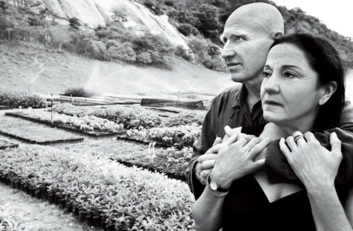
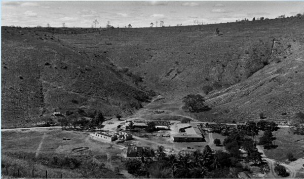

Instituto Terra is the ambitious Project thought by the famous Brazilian photographer, Sebastiao Salgado and his wife Lélia Dluiz Wanick. Once back on Sebastiao native lands, in Aimorès (Minas Gerais), the region previously covered by the Atlantic forest was totally converted in an infertile and burned land where erosion showed the red veins of the earth; The trees, the smell of the sweet flowers, the song of the birds : Everything had disappeared. Thus, Lélia had the great idea to replant the Bulcão property
INSTITUTO TERRA

2.7 MILLION OF TREES
In 1998, the government accepted for the first time to give the title of RPPN (Private reserve of natural heritage) to a reserve where no trees were planted. A compromise which actually shows incredible results. The work is really impressive and unreal. The first plantation was done in December 1999 and since, years after years, they have succeeded to plant more than 2.7 million of trees.
2000

2012
Actually, the institute has re-established 555 acres of forest and it is also an important source of work in the region. Indeed, the institution count more than 70 employees.
The Atlantic forest is a terrifying topic in Brazil. In just 30 years, the cattle has converted the forest in dust. In all Brazil, it just remains 10% of this forest. In Aimorès, the results
are for crying: 0,30 % of Atlantic forest. In addition to the cattle, the exploitation of the mines also contributes
to the deforestation. We are in Minas Gerais : Main mines.
The cycles of reforestation :
The first step of replantation is in the laboratory, where numerous seeds are brought. These one are collected in a perimeter of 200 km. Depending of the specie, there are set in a fridge to help the germination or they are directly set outside.
ESTABLISHED 555 ACRES OF FOREST
ONE MILLION OF PLANTS CAN BE STOCKED
The next step takes place in the plant nursery where more than one million of plants can be stocked. The plants are classified and laid out within their preferences (darkness, light, a little bit or a lot of water). A constant care is done till the plantation which take place at the beginning of spring and summer.
Regarding the fauna, a lot of species which disappeared from the region have now found a new place in the Bulcão farm. Nowadays, we can meet 172 species of birds, which six are in danger of extinction. 33 species of mammals, which 7 are very vulnerable. 16 species of amphibians and 15 of reptiles.
The land is red and has a very high natural fertility but it is also very sensitive to the erosion. A factor which oblige to quickly replant. These 17 years were sufficient to make reappear numerous water sources, all tributaries of the Rio Doce. And for the future? During the next years, one of the objectives is to re-establish 1500 acres of Atlantic forest. That is not all, the institute has launched a new project called “OLHOS D´ÁGUA”. This project took already place in 2010 and has as goal to get, in 7 areas of Minas Gerais, the water source from the rio Doce back.
IN 17 YEARS, LIFE CAME BACK
EVERYTHING
IS
POSSIBLE
To succeed this project. The institute meets several land owners surrounding the Rio doce. Once the water source localized, they are protected by a fence, preventing the cow to compact the ground near the source. When this step is completed, the replanting can start. With time, the source grows to give life again. The burned lands are converted in green pastures. The work is considerable, but the institute shows us that everything is possible. For the year 2030, the goal is to re-establish 75 000 water sources from the Rio Doce.